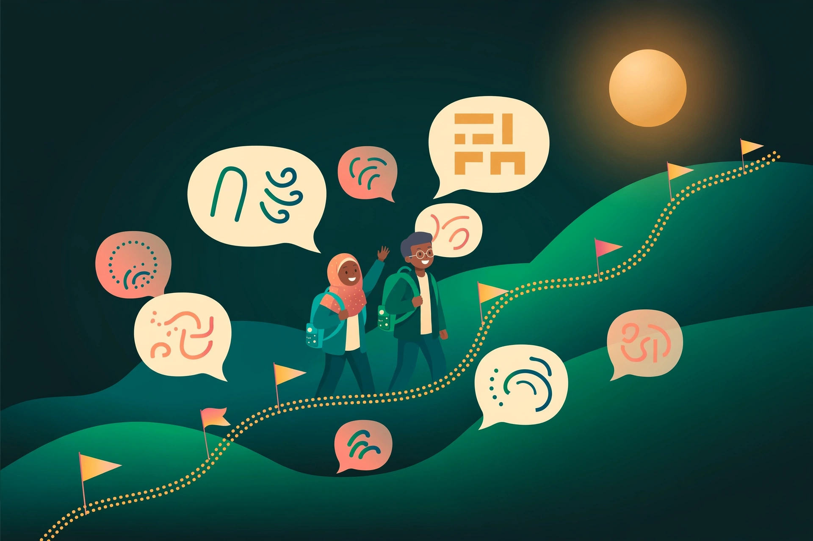

Bahasa Inggris Hello!
Bahasa #1 yang dipelajari di Indonesia — untuk kuliah ke luar negeri, karier, dan syarat beasiswa. Jalur lengkap A1–C2 plus persiapan IELTS & TOEFL.
IELTS · TOEFLKuliah & karierA1–C2
Satu kurikulum utuh mengikuti standar CEFR A1–C2, dijelaskan sepenuhnya dalam Bahasa Indonesia — dengan jalur khusus untuk kerja ke luar negeri, kuliah, dan persiapan ujian resmi.

Data Duolingo 2026 menempatkan Indonesia di 5 pasar dengan pertumbuhan tercepat di dunia, dengan urutan bahasa teratas: Inggris, Jepang, dan Mandarin — pangsa pembelajar Mandarin bahkan hampir 3× lipat sejak 2023.
Bahasa #1 yang dipelajari di Indonesia — untuk kuliah ke luar negeri, karier, dan syarat beasiswa. Jalur lengkap A1–C2 plus persiapan IELTS & TOEFL.
Sudah ada 180 ribu+ pekerja Indonesia di Jepang dan terus bertambah — Jepang menargetkan 1,2 juta pekerja asing pada 2028. Target kerja: JLPT N4–N3.
Kunci bekerja di Taiwan dan Hong Kong — dua tujuan penempatan PMI terbesar. Pembelajar Indonesia 4,15× lebih mungkin belajar Inggris + Mandarin sekaligus dibanding rata-rata global.
Untuk lolos EPS-TOPIK dan bekerja di Korea, kuliah, atau sekadar menikmati K-drama & K-pop tanpa subtitle. Target kerja dan kuliah umumnya TOPIK 3–4.
Sertifikat B1 adalah syarat wajib visa Ausbildung; perawat membutuhkan B2. Jerman memproyeksikan kebutuhan ±120 ribu perawat tambahan pada 2034.
Sumber: laporan pasar Duolingo (Sep 2026) & data penempatan PMI — diringkas dalam riset 18 Oktober 2026.
Klik tiap level untuk melihat kemampuan yang akan kamu kuasai dan estimasi jam belajar terpandunya menurut Cambridge English.
Kamu bisa memakai frasa hafalan: memperkenalkan diri, memesan makanan dan minuman, serta menanyakan hal-hal sederhana.
Fokus level ini: fonetik & pelafalan dasar, frasa survival, pola kalimat present & past sederhana.
Estimasi jam belajar terpandu per level — panduan resmi Cambridge English.
Penting: perjalanan B1 → C2 menyerap sekitar 65% dari total waktu. Karena itu LangkahLisan menaruh B2 sebagai target “sweet spot” — level kemandirian fungsional untuk bekerja dan kuliah.
Empat langkah dalam ±3 menit: dengarkan penutur asli, pilih arti, susun kalimat, lalu ucapkan dan terima skor pengucapan per aspek. Pilih bahasanya:
Setiap unit berjalan dalam siklus yang sama: input yang bisa dipahami → fokus grammar & kosakata → latihan terkontrol → produksi (bicara/tulis) → review terjadwal.
Dialog & video selalu sedikit di atas levelmu saat ini (prinsip i+1 Krashen) — cukup menantang untuk naik level, cukup dipahami agar tidak menyerah.
Kosakata & grammar di-review tepat sebelum kamu lupa. Algoritma FSRS modern memangkas beban review 20–30% dengan retensi yang sama.
Tirukan ucapan penutur asli secara real-time, rekam, lalu terima skor akurasi per kata dan per fonem — menjembatani mendengar menjadi berbicara.
Drill harian dengan AI, pendalaman & motivasi dengan tutor di kelas live. Temuan studi 2026 cukup tegas:
Persentase pembelajar yang mencapai B2 — studi Leanlab/Preply 2026.
±15 menit untuk memetakan level CEFR awalmu dan merekomendasikan jalur: umum, kerja ke luar negeri, atau kuliah.
Tiap level berisi 8–12 unit tematik; tiap unit 5–8 pelajaran singkat 10–15 menit: video/dialog → grammar & kosakata → drill → kuis → produksi.
Shadowing dan rekam-bandingkan dengan penilaian pengucapan otomatis — skor akurasi, kelancaran, dan intonasi per kata & fonem.
Roleplay tanpa malu: di restoran, wawancara kerja, sampai simulasi speaking IELTS/JLPT. Kesulitan menyesuaikan level CEFR-mu, koreksi disampaikan taktis.
Flashcard terbentuk otomatis dari materi yang sudah kamu pelajari, plus daftar “kata sulit” yang diprioritaskan untuk diulang.
XP, streak harian, liga mingguan, dan misi harian — pola yang terbukti membuatmu kembali belajar setiap hari.
Bank soal + mock exam IELTS, TOEFL, JLPT, TOPIK, HSK, dan Goethe dengan prediksi skor dan analisis kelemahan per seksi.
Paket khusus Jepang, Korea, dan Jerman: target ujian + kosakata vokasional bidang kerjamu. Fitur pembeda utama kami — lihat di bawah.
Sesi percakapan terjadwal dengan tutor Bahasa Indonesia dalam grup kecil — untuk pendalaman, tanya-jawab, dan menjaga motivasi.
Peta progres CEFR yang jelas, dan sertifikat digital terverifikasi berkode cek di setiap kenaikan level — siap dilampirkan ke portofolio kerja.
Unduh pelajaran untuk belajar tanpa sinyal; mode audio-first menghemat kuota — dirancang untuk kondisi internet Indonesia.
Untuk perusahaan dan lembaga pelatihan kerja: kurikulum bahasa per kelas peserta, laporan progres, dan penagihan per seat.
Aplikasi global seperti Duolingo tidak punya ini: kurikulum bahasa yang disambungkan langsung ke ujian dan kosakata bidang kerja di negara tujuanmu — dengan pengantar Bahasa Indonesia.
Untuk calon pekerja Specified Skilled Worker dan pemagang. 180 ribu+ pekerja Indonesia sudah bekerja di Jepang.
Untuk calon pekerja skema Employment Permit System (EPS) dan mahasiswa. Ujian bahasa adalah gerbang pertama seleksinya.
Untuk calon peserta Ausbildung (magang vokasi bergaji) dan tenaga kesehatan. Di Jerman, syarat bahasanya tegas dan tertulis.
Setiap jalur ujian dilengkapi bank soal, mock exam berformat resmi, dan prediksi skor.
Format & target diringkas dari riset 18 Oktober 2026. Catatan: struktur TOPIK “berlaku 2025” versi HKEAA berbeda dari format standar dan belum terverifikasi penuh — selalu cek format terbaru di situs resmi penyelenggara sebelum mendaftar ujian.
Cukup nomor HP atau email. Tanpa kartu kredit, tanpa komitmen.
Tes adaptif memetakan level CEFR awalmu — pemula total pun mulai dari titik yang tepat, bukan dari tebak-tebakan.
Kerja ke luar negeri, kuliah, karier, atau hobi — jalur belajarmu disusun mengikuti tujuan itu.
Pelajaran 10–15 menit + review SRS + latihan bicara. Streak dan misi harian menjaga ritmemu.
Di akhir tiap level: tes menyeluruh dan sertifikat digital CEFR terverifikasi untuk portofoliomu.
Di B1/B2 kamu diarahkan ke jalur ujian resmi (IELTS/JLPT/TOPIK/HSK/Goethe) dan kelas live untuk pemantapan akhir.
Pasar Indonesia sangat sensitif harga — jadi tingkat gratis kami benar-benar berguna, dan Premium dihargai dalam rupiah, bukan dolar.
Untuk memulai & membuktikan sendiri
selamanya
Untuk pembelajar serius A1–C2
Untuk calon pekerja Jepang / Korea / Jerman
sekali bayar per jalur negara
Pembayaran: QRIS, e-wallet, transfer bank, dan pulsa. Harga di halaman ini adalah konsep dalam rentang hasil riset pasar (Premium Rp75–150 ribu/bulan; paket ujian/kerja Rp300–800 ribu) — bukan penawaran nyata. Untuk lembaga & perusahaan: paket B2B per seat per tahun, hubungi tim kami.
Perbandingan jujur berdasarkan riset pasar 18 Oktober 2026 — setiap pemain punya keunggulan masing-masing; celahnya ada di kombinasi untuk Indonesia.
Kurikulum mandiri + hybrid, dirancang untuk Indonesia
Gamifikasi freemium global, 40+ bahasa
Kelas live online Indonesia, 4 juta+ pengguna
*Harga Cakap saat ini tidak dipublikasikan (angka 2020 sudah usang) sehingga belum terverifikasi. Sebagai jangkar harga pasar: program imersif Kampung Inggris Pare mulai ±Rp200 ribu per 2 minggu; aplikasi AI speaking Stimuler laku di Indonesia pada US$5–7/bulan.
Ikuti tes penempatan gratis, lihat peta levelmu, dan mulai pelajaran pertama hari ini — dari nol pun tidak masalah, memang dari situlah semua orang mulai.
Mulai Tes Penempatan GratisPilih bahasa dan situasinya, lalu jawab setiap giliran dengan mengetik atau berbicara. Setiap jawabanmu langsung dikoreksi — grammar & pilihan kata — dengan penjelasan dalam Bahasa Indonesia, plus skor per giliran dan rangkuman di akhir sesi.
Tutor akan berbicara dan mendengarkan dalam bahasa ini.
Empat situasi nyata, masing-masing 4 giliran percakapan.
Cara kerja versi produksi (belum aktif di mockup ini): percakapan bebas tanpa skenario tetap, koreksi grammar & pilihan kata dari model AI, skor pengucapan per fonem dari rekaman suara, dan riwayat sesi tersimpan di akunmu. Di mockup ini semua itu disimulasikan lokal agar alur & tampilannya bisa dicoba sekarang.
Halo!
GratisSelamat datang di LangkahLisan! Kamu belum memulai pelajaran apa pun — perjalananmu dimulai dari Level A1. Bahasa pilihanmu saat ini adalah Bahasa Inggris; kamu bisa menggantinya kapan saja di halaman Bahasa.
Pilih Bahasa & MulaiStreak-mu mulai berjalan setelah pelajaran pertamamu selesai. Belajar sedikit setiap hari — mulai hari ini.
0 XP terkumpul — kamu mulai dari Level A1 Bahasa Inggris. Selesaikan pelajaran pertamamu untuk mulai mengisi jalur ini. Lihat peta level A1–C2 →
*Belum ada aktivitas belajar minggu ini — grafik ini mulai terisi begitu kamu menyelesaikan pelajaran pertamamu.
Target mingguan: 0 / 500 XP (0%)
XP hari ini: 0 / 100
Ini titik awalmu: empat langkah pertama untuk memulai dari nol di Bahasa Inggris Level A1. Belum ada yang selesai — centang tugas setelah kamu mengerjakannya, dan XP-mu mulai terisi dari sini.
Ngobrol dengan tutor AI — mulai dari topik “Perkenalan Diri”, lengkap dengan koreksi & skor per giliran.
Mulai ngobrol →Pelajaran terpandu 4 langkah pertamamu: dengar, pilih arti, susun kalimat, lalu ucapkan.
Buka pelajaran →Jalur khusus kerja ke luar negeri: target ujian resmi (JLPT, EPS-TOPIK, Goethe) dan kosakata vokasional bidang kerjamu.
Lihat jalur kerja →Lanjutkan progres belajarmu, jaga streak-mu, dan buka paket belajarmu.
Login Google memakai provider Google di Supabase Auth project web bahasa (diaktifkan dari dashboard: Authentication → Providers → Google).
Alurnya mengikuti pola Portal Beasiswa: pilih paket → bayar manual via QRIS/transfer → upload bukti pembayaran → admin memverifikasi → akses paket terbuka di akunmu.
1 bahasa pilihan, pelajaran harian + SRS dasar, tes penempatan & peta level. Tanpa pembayaran — cukup punya akun.
Semua 5 bahasa A1–C2, tutor AI tanpa batas, skor pengucapan per fonem, sertifikat CEFR terverifikasi, mode offline.
Semua fitur Premium + jalur khusus JLPT N4–N3 / EPS-TOPIK / Goethe B1, bank soal & mock exam resmi, kosakata vokasional.
Skema data di Supabase (pola yang sama dengan Portal Beasiswa): tabel profiles (id, username, plan: gratis / premium / paket_kerja, verified), tabel verifikasi (user_id, paket, proof_url, status), dan bucket storage “bukti-pembayaran” untuk file bukti. Akses paket terbuka hanya setelah admin mengubah status verifikasi — tidak ada aktivasi otomatis hanya dari upload bukti.
Catatan tentang sifat mockup, sumber data, dan batas verifikasi konten di halaman ini.
LangkahLisan adalah nama dan konsep produk fiktif untuk keperluan mockup. Website ini adalah purwarupa tampilan & alur — bukan layanan yang sudah beroperasi, dan tidak ada transaksi nyata yang terjadi di dalamnya.
Angka pasar, jam belajar, format ujian, dan temuan studi yang dikutip di halaman-halaman website ini berasal dari riset web tanggal 18 Oktober 2026 — antara lain panduan jam belajar Cambridge English, data pasar Duolingo 2026, dan studi hybrid Leanlab/Preply 2026.
Harga yang tampil adalah konsep dalam rentang hasil riset, bukan penawaran nyata — termasuk harga paket di halaman Harga dan Paywall.
Beberapa hal belum terverifikasi dan ditandai di tempatnya:
Untuk keputusan belajar, ujian, atau keberangkatan kerja ke luar negeri, selalu cek informasi terbaru langsung ke sumber resminya (penyelenggara ujian, lembaga, dan otoritas terkait).